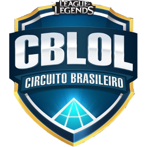
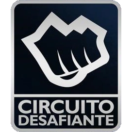

História do CBLOL
O Campeonato Brasileiro de League of Legends é a principal competição do jogo eletrônico League of Legends no Brasil, administrada por sua desenvolvedora, Riot Games.
A primeira versão
O torneio vem sendo organizado desde 2012, pouco após a estreia do servidor brasileiro do jogo, com o profissionalismo ainda incipiente, quando foi realizado em apenas três dias.
O torneio começou em 21 de janeiro e terminou em 8 de abril com a vTi Ignis derrotando sua equipe-irmã vTi Nox por 2 a 0 na final. A premiação foi de 80 mil dólares, dos quais 25 mil foram destinados à equipe vencedora.
Surge uma liga
Em 2014, foi realizado o primeiro campeonato em forma de liga: a Liga Brasileira - Série dos Campeões, e no mesmo ano foi inaugurado o precedente de duas competições anuais, com a realização da Final Regional Brasileira.

Desde então, adota-se o formato de dois splits, com cada um disputado com primeira fase no formato "todos contra todos", e posterior mata-mata até a grande final.
Em 2015, adotou-se o formato de liga com membros estáveis, mas sujeitos a rebaixamento e promoção dos piores colocados em benefício dos melhores da segunda divisão, o Circuito Desafiante. Até o ano anterior, adotava-se uma fase classificatória para a disputa do campeonato.
No ano de 2021, o CBLOL adotou o sistema de franquias para as equipes, passando de oito para dez times sem a possibilidade de rebaixamento dos times para o Circuito Desafiante, e a criação de uma nova liga a fim de revelar novos jogadores, o CBLOL Academy. Ligas como a League of Legends Championship Series (LCS) e a League of Legends European Championship (LEC) já utilizavam esse formato, onde vem se provando cada vez mais eficiente que os demais. Em 2022, a Riot reformulou seu estúdio, passando a se chamar Arena CBLOL, para que pudesse começar a receber plateia durante os jogos.
Espero que tenha gostado do nosso artigo sobre o nosso queridinho e odiado CBLOL.